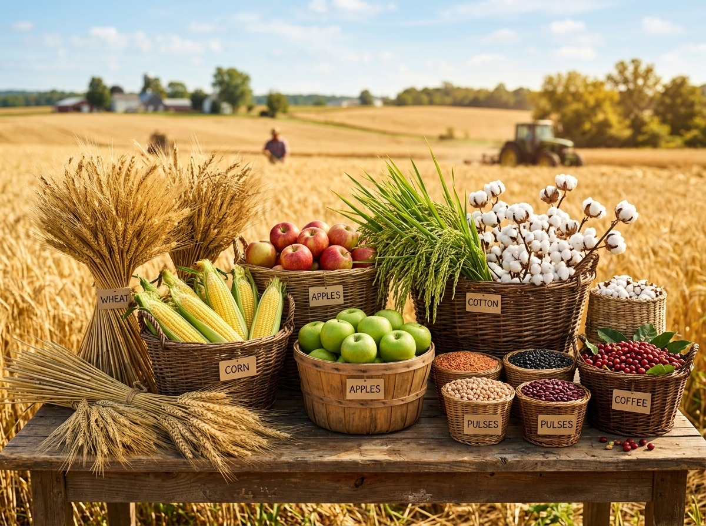
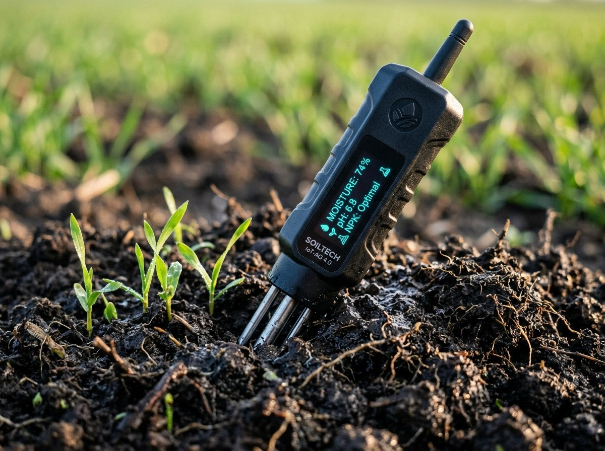
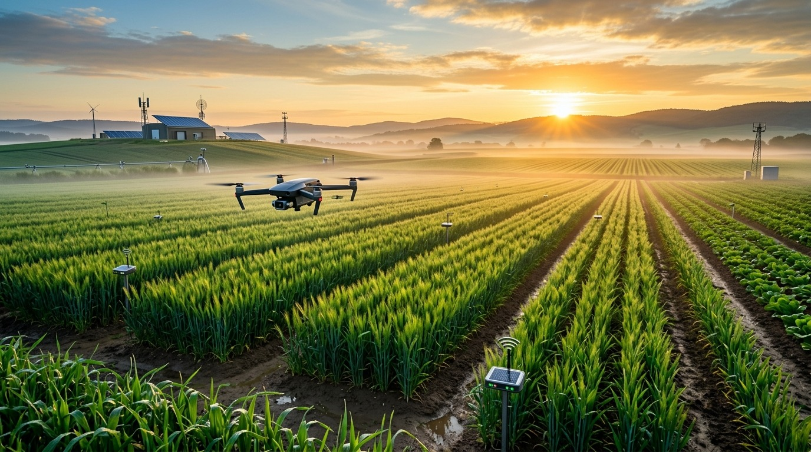

AI-powered crop selection for better farming decisions
Harness state-of-the-art Machine Learning to discover the highest-yielding, most sustainable crops tailored to your soil’s macronutrients (N-P-K), soil pH, and micro-climatic environmental parameters.

Traditional farming often relies on guesswork or outdated historical trends. Our machine learning framework optimizes biological yield while protecting soil fertility.
Calculates precise vegetative nutrient absorption across Nitrogen (N), Phosphorus (P), and Potassium (K) to eliminate fertilizer waste.
Analyzes localized ambient temperature, relative humidity, and expected rainfall thresholds to safeguard against crop failure.
Ensures that soil acidity and alkalinity match the exact biochemical uptake ranges for maximum root absorption.
Combines Random Forest, Decision Trees, and Support Vector Machines with over 99% empirical validation.

Direct integration with digital soil testing probes delivers accurate Nitrogen, Phosphorus, Potassium, and pH readings instantaneously.

Farmers matching their regional micro-climates with ML-recommended crop varieties achieve an average 35% higher market return.
Nitrogen drives green leafy vegetative vigor; Phosphorus builds deep root systems; Potassium activates enzymes and disease resistance.
High ambient humidity (82%) paired with heavy rainfall (220 mm) and neutral pH (6.5) creates optimal conditions for Rice vegetative growth. Nitrogen levels match peak vegetative tillering requirements.
Real-time visualization of soil nutrient balance, micro-climatic environmental telemetry, and historical recommendation records.
Persistent records preserved in your local farm session
| Date & Time | Region / Field | Recommended Crop | Confidence | Telemetry Parameters | Action |
|---|
Browse our comprehensive directory of 22 supported crops with scientific data, required nutrients, irrigation, and harvest durations.
From in-situ soil testing to high-confidence agricultural recommendations, here is the end-to-end data science workflow.
Farmer inputs N-P-K nutrients, soil pH, and weather telemetry.
StandardScaler normalizes z-scores and handles feature outliers.
Ensemble classifier processes non-linear multidimensional decision bounds.
Softmax probability computes confidence scores for all 22 crops.
Generates agronomy guide, water requirements, and planting tips.
Click any model below to inspect its architecture or use it as the active inference engine.
Ensemble of 100 decision trees utilizing bootstrap aggregation and random feature sub-selection. Highly resilient to noisy soil measurements and non-linear climate thresholds.
Constructs a hierarchical binary decision tree splitting on optimal Gini gain. Offers full interpretability and fast inference, but can be sensitive to marginal variance.
Projects 7-dimensional agronomic vectors into higher-dimensional space using a Radial Basis Function (RBF) kernel to construct maximum-margin hyperplanes.